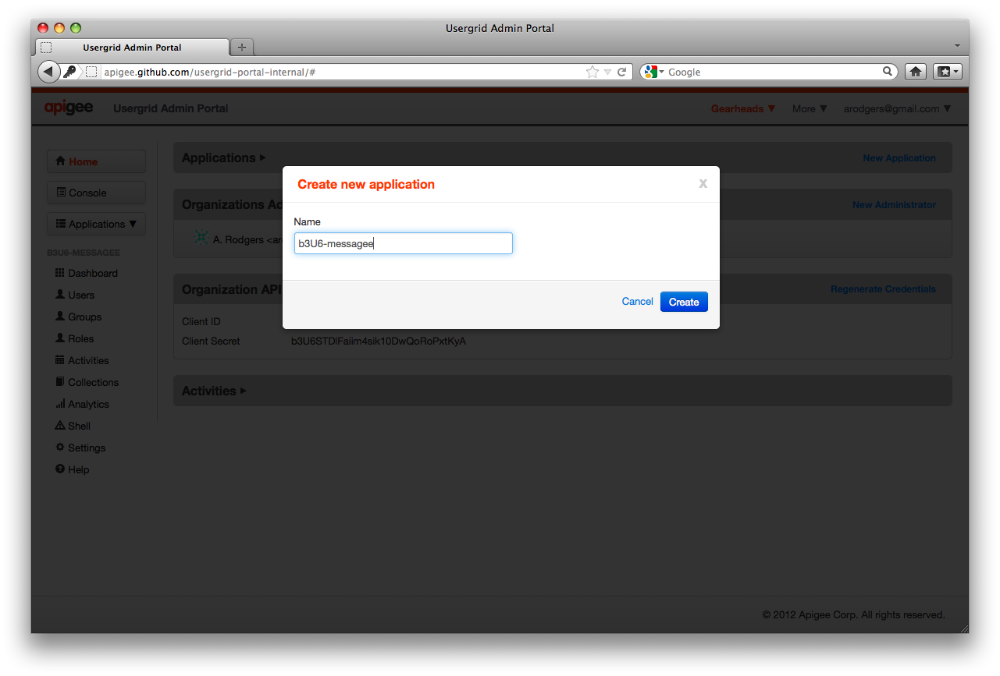
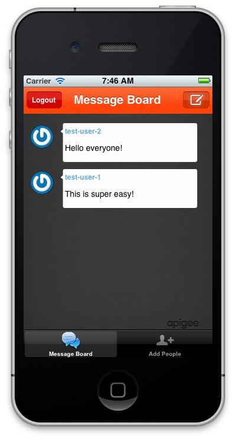

App Example - Messagee¶
Messagee is a simple Twitter-style messaging application that leverages the extensive functionality of Usergrid. This section describes some of the features of Messagee.
There are three client versions of Messagee:
The sections below describe how to create a new app, enter some test users, and run the app. You also learn how to use the Usergrid admin portal, a user interface that streamlines data and application management in the Usergrid system. The portal is also a reference application that shows how to incorporate Usergrid APIs with JavaScript.
Creating a user account in Usergrid¶
Go to the Usergrid portal and login. If you are new to Usergrid, sign up for an account, specifying an organization (e.g., the name of your company or project team) and a username and password that you can use to authenticate. Because Usergrid are designed for use by development teams, the same username can be associated with one or more organizations.
If you create a new account, you receive a confirmation email that contains a URL that you must click to activate the account. After this, simply log in to the portal with your username and password.
Creating an app and users¶
When you have logged in, you need to create a new application.
STEP 1¶
Enter a unique application name. The name must be unique to avoid a conflict with another user running the same application.
STEP 2¶
Make sure that the portal shows the application name you entered as the active application beneath the Applications menu (1).
If the correct name is not displayed, click the menu and select your application. Next, you need to populate a test user user-test-1 that is going to log in to your copy of the server-side Messagee app.

STEP 4¶
Click the Add button and enter the user information for your application in the pop-up window (be sure to create a password you can remember), and then click the Create button. Repeat these steps to create a second username test-user-2.
STEP 5¶
When you have finished all these steps, you have a new application and two new users.
Now that you have created a uniquely named copy of the Messagee application as well as two user accounts (test-user-1 and test-user-2), you are ready to test out the Messagee app. Use test-user-1 to log in to the app, and test-user-2 as the user to follow.
To continue with the example, follow the instructions for a client app (iOS client, Android client, or HTML5 client).
iOS client¶
Messagee is available as an iPhone app that uses Usergrid and RestKit. The source for the iOS version of Messagee is available in the /samples/messagee directory of the Usergrid iOS SDK
Here are the steps to run the Messagee app on iOS:
STEP 6¶
Run Steps 1-5 under Creating an app and users. These steps create a unique instance of the Messagee app on the server and two test users, test-user-1 and test-user-2.
STEP 7¶
Access the Messagee server app by typing a URL similar to the following into your iOS mobile client (replace with the unique name of your application): https://api.usergrid.com//index.html
STEP 8¶
On the mobile client, complete the registration information and click Register.
STEP 9¶
Log in to the Messagee app by entering the test-user-1 account information created previously, and click the Sign in button.

STEP 10¶
At this point, the message board is empty:
STEP 11¶
To post a message using the app, click the top-right icon in the message board to create a message, write the message text, and send it by clicking Post.
Note: The posted message should appear in the message board within few seconds.
STEP 12¶
For your instance of the Messagee application to act like Twitter, you need to “follow” another user.
In the message board, click Add People and add test-user-2 as a person that test-user-1 follows.

STEP 6¶
Log in as test-user-2 and post a message as this user to the message board.
Go back and log in as user test-user-1. Because test-user-1 follows test-user-2, you should see the message sent by test-user-2 in the message board.
iOS SDK¶
If you want to write iOS applications that connect to Usergrid, download the Usergrid iOS SDK.
Note: The Messagee iOS application uses RestKit, a popular REST framework for iOS, to communicate with Usergrid. Because Usergrid use a REST API, you can use any REST framework to talk with the service. However, the official Usergrid iOS SDK provides a more convenient communication mechanism that you should use unless you’re already using RestKit or some other framework in your project.
Android client and SDK¶
Messagee is available as a sample Android app that acts as a Usergrid client. The source for the Android version is packaged with the Usergrid Android SDK in the /samples/messagee directory.
Javascript/HTML5 client and SDK¶
Messagee is also available as a sample HTML5 app that behaves in much the same way as the two previous examples. The source for the HTML5 version is packaged with the Usergrid Javascript/HTML5 SDK in the /samples/messagee directory.